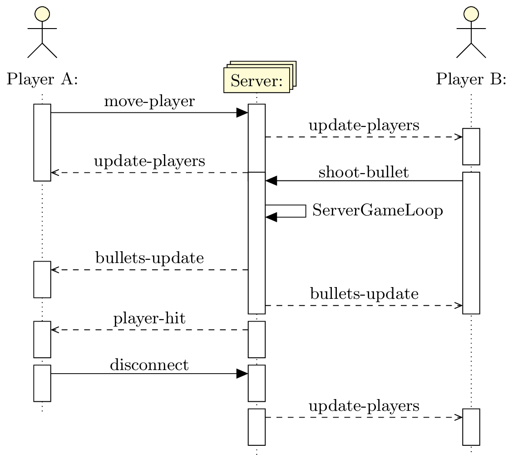

\documentclass{standalone}
\usepackage{tikz}
\usepackage{tikzscale}
\pgfdeclarelayer{background,foreground}
\pgfsetlayers{background,main,foreground}
\usepackage{tikz-uml}
\usepackage[english]{babel} % load this package so tikz-uml loads, it may be due to my japanesse localle lol.
\begin{document}
\begin{tikzpicture}
\begin{umlseqdiag}
\umlactor{Player A}
%\umlobject{Server}
\umlmulti{Server}
\umlactor{Player B}
% Player spawns, no other player on the map
\begin{umlcall}[op=move-player,return=update-players]{Player A}{Server}
\begin{umlcall}[type=return,op=update-players]{Server}{Player B}
\end{umlcall}
\end{umlcall}
% Player B shoots a bullet
\begin{umlcall}[op=shoot-bullet,return=bullets-update]{Player B}{Server}
\begin{umlcallself}[op=ServerGameLoop]{Server}
\end{umlcallself}
\begin{umlcall}[type=return,op=bullets-update]{Server}{Player A}
\end{umlcall}
\end{umlcall}
\begin{umlcall}[type=return,op=player-hit]{Server}{Player A}
\end{umlcall}
\begin{umlcall}[op=disconnect,type = synchron]{Player A}{Server}
\end{umlcall}
\begin{umlcall}[type=return,op=update-players]{Server}{Player B}
\end{umlcall}
% Player A Moves
% \begin{umlcall}[op=move-player,return=update-players]{Player B}{Server}
% \begin{umlcall}[type=return,op=update-players]{Server}{Player A}
% \end{umlcall}
% \end{umlcall}
%% Game Loop
% \begin{umlfragment}[type=loop]
% \begin{umlcallself}[dt=5,op=ServerGameLoop]{Server}
% \begin{umlcallself}[op=spawnHealthPacks]{Server}
% \end{umlcallself}
% % Update hearts, mini-ships on both sides
% \begin{umlcall}[type=return,op=healthPack-update]{Server}{Player A}
% \end{umlcall}
% \begin{umlcall}[type=return,op=healthPack-update]{Server}{Player B}
% \begin{umlcall}[type=return,op=bullet-update]{Server}{Player A}
% \end{umlcall}
% \begin{umlcall}[type=return,op=bullet-update]{Server}{Player B}
% \end{umlcall}
% \end{umlcall}
% \end{umlcallself}
% \end{umlfragment}
\end{umlseqdiag}
\end{tikzpicture}
\end{document}Created by David Li